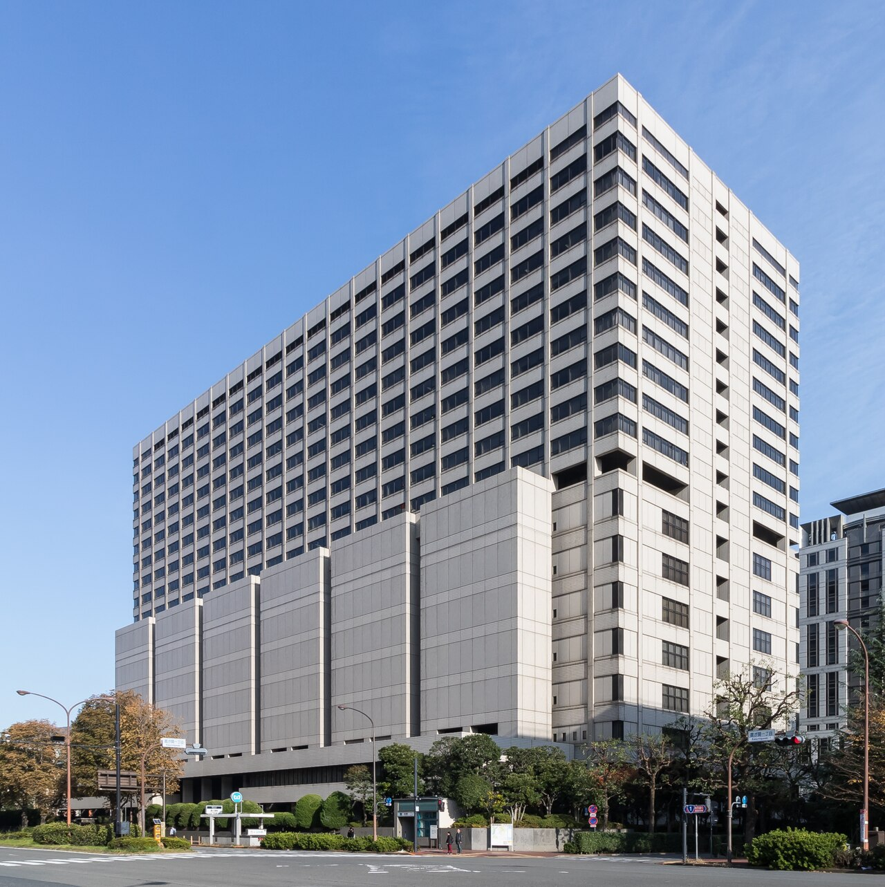
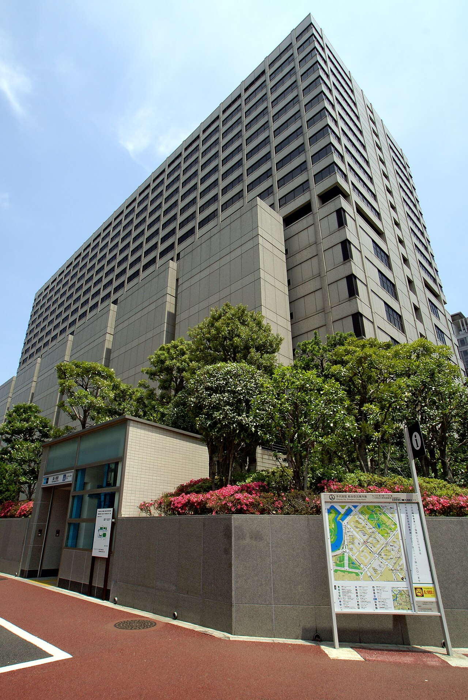
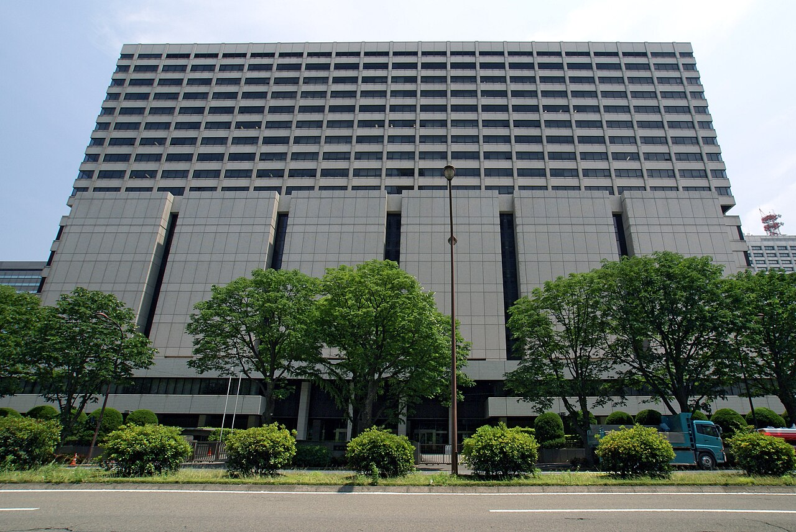
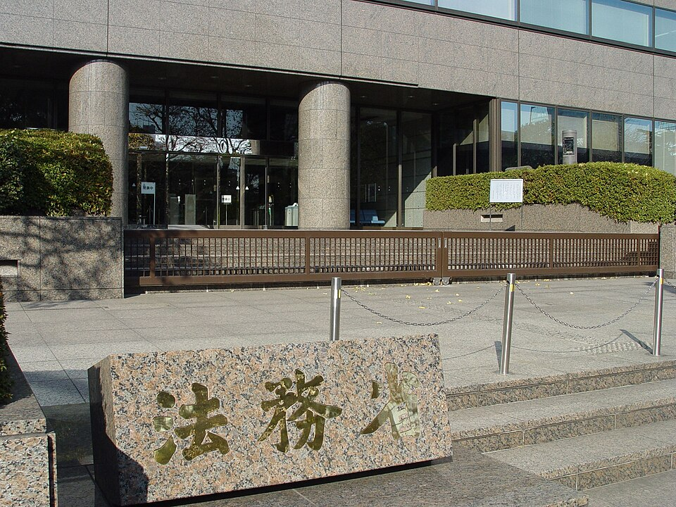
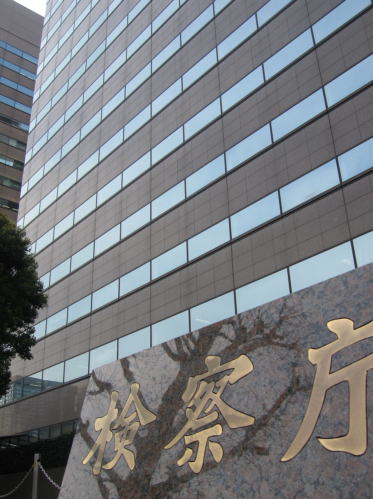
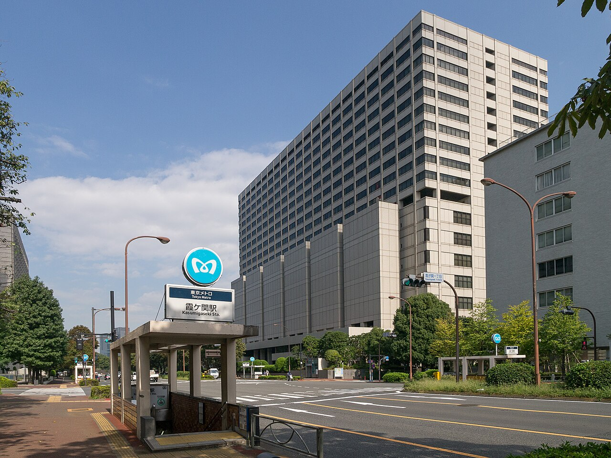
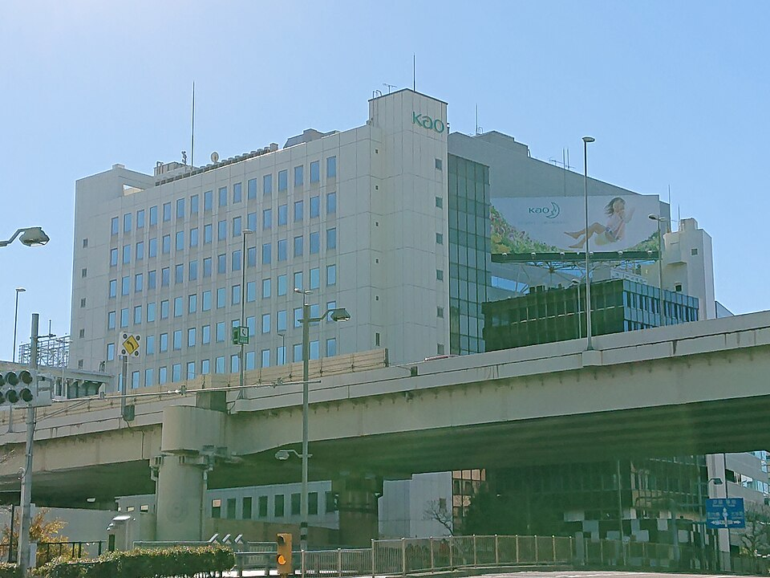

.jpg){kind=link}


_05.jpg){kind=link}
帆
帆足隆
ほあし・たかし
元代表取締役会長兼社長
役割：旧経営陣の中心として粉飾を指示したと認定された
その後：懲役2年・執行猶予3年3
少なくとも1998年〜2007年
カネボウ旧経営陣は、不採算子会社の連結除外、架空売上、費用過少計上、在庫過大評価などにより。1998年度以降の財務状態を実際より良く見せた。証券取引等監視委員会は、中央青山監査法人の会計士との共謀を公表した。1
2004年の産業再生機構による精査で、2004年3月期末にカネボウグループが3,553億円の債務超過に陥っていたことが判明し、2005年4月。過年度5期分について粉飾総額約2,150億円が公表された。2
元社長の帆足隆、元副社長の宮原卓、中央青山の元会計士3人が有罪判決を受け。中央青山監査法人は2006年に2か月の一部業務停止処分を受けた。3
カネボウは繊維を起点に、化粧品、薬品、食品。ホームプロダクツなどへ多角化した企業グループであった。産業再生機構は、過度な事業展開と不採算事業からの撤退遅れによって過剰債務を抱えたと評価している。事業の整理が遅れる一方で、旧経営陣は財務状態を直ちに開示する判断をしなかった。1
その判断の前提には、債務超過と破綻を公表すれば、従業員、家族。株主などに広い影響が及ぶという帆足隆らの考えがあった。帆足は法廷で、破綻ではなく連結外しを選んだという趣旨を述べたと報じられた。この説明は当事者の主張であり、粉飾を正当化する法的評価ではない。3
したがって、事件の起点は単発の仕訳ではなく、拡大した事業群を維持するために。経営陣と監査人が複数年度の財務情報を扱った過程にあった。誰が経営判断を示し、誰が具体的な方法を提案し、誰が監査証明を通じて市場に届けたのかが。その後の責任判断の中心になった。2
カネボウ(株)の代表取締役会長兼社長であった犯則嫌疑者らは、同社の監査証明の業務に従事していた中央青山監査法人の公認会計士ら（犯則嫌疑者）と共謀の上、同社の業務に関して、大量の不良在庫等を抱え、業績が悪化していた子会社を連結決算の対象から外すなどの方法により、虚偽の記載のある連結貸借対照表及び連結損益計算書を掲載した有価証券報告書を提出した。
意味：監視委が、経営トップと監査法人の公認会計士の「共謀」、および不良子会社の連結除外を事件の中核として公表している。
粉飾の中心は、赤字や不良資産を抱えた子会社を連結決算の対象から外す方法であった。証券取引等監視委員会は、カネボウの代表取締役会長兼社長であった人物らが、中央青山監査法人の公認会計士らと共謀し。業績が悪化した子会社を連結対象から外すなどして虚偽の連結貸借対照表と連結損益計算書を有価証券報告書に掲載したと公表した。2
報道・研究資料では、1999年前後に新しい連結会計基準が導入されることを意識し、ダミー会社や株式移転を用いて赤字子会社を連結範囲から外す手法が採用されたとされる。興洋染織やカネボウフーズの販売子会社などが具体例として報道されたが、詳細は刑事判決本文を直接確認できていないため、報道ベースの情報として扱う。4
2002年3月期の連結決算では、実際には819億8,200万円の債務超過だったのに、資本合計欄を9億2,600万円の資産超過と記載した。連結純利益も、実際には64億9,500万円の損失だったのに7,000万円の利益とした。2003年3月期にも、実際には806億800万円の債務超過だったところを、5億200万円の資産超過と記載した。3
この差額は、単一年度の記載ミスではなく、複数年度の有価証券報告書に継続して現れた。2004年3月期の財務精査で、事業撤退費用、資産処分と再評価による特別損失などを反映すると3,553億円の債務超過となっていたことが判明した。1
2002年と2003年の記載は、資産超過と利益という表示が、実際の債務超過と損失を覆っていたことを具体的に示す。後の決算訂正は、この表示を年度ごとに修正し、金融機関の支援と事業再編の前提を組み替える作業になった。3
2004年2月16日、カネボウと三井住友銀行は産業再生機構活用の意向を表明し、3月10日に機構は支援決定を行った。当初の計画は化粧品事業の営業譲渡を柱としていたが、機構による財務精査で財務状態が想定を大幅に下回ることが判明した。5
機構は5月31日、旧支援決定を撤回し、カネボウとグループ34社への支援を改めて決定した。再生計画では金融機関から995億円の債権放棄を受け、約99.7％の減資を行い、機構と三井住友銀行が500億円の第三者割当増資を引き受ける枠組みが示された。16
2004年4月、カネボウは経営浄化調査委員会を設置した。調査を契機として2002年・2003年3月期の連結決算に問題があることが確認され、その後の監査法人と会社側の調査で、複数年度にわたる架空売上、費用過少計上、不採算子会社の連結除外。在庫過大評価などが判明したとされる。7
2005年4月13日、カネボウは過年度決算を訂正し、2000年3月期から2004年3月期までの5年間に総額約2,150億円の粉飾があったことを公表した。発表は、旧経営陣が維持してきた説明を会社自身が訂正する転機になった。5
2005年5月12日、東京証券取引所はカネボウ株式の上場廃止を決定した。理由は、複数年度にわたる財務諸表の重大な虚偽記載と監査報告書における意見不表明であった。整理ポストは5月13日から6月12日、上場廃止日は6月13日とされた。8
2005年7月、東京地検特捜部は旧経営陣を証券取引法違反容疑で逮捕したと報じられた。11月30日の初公判で帆足と宮原は起訴事実を全面的に認めたとされ、帆足は指示者、宮原は具体的な粉飾手段の提案者と判決で位置付けられた。3
中央青山の会計士4人については、2005年9月13日に逮捕されたとする研究資料がある。ただし、逮捕と不起訴の全容を検察庁の公式発表で確認できていないため、一部は報道・研究資料ベースである。東京地裁は2006年8月9日、佐藤邦昭、徳見清一郎。神田和俊の3人に有罪判決を言い渡したと報じられた。910
金融庁は2006年5月10日、中央青山監査法人に一部業務停止2か月の処分を行い、徳見と神田を登録抹消。宮村和哉を1年間の業務停止とした。5月24日には佐藤の登録抹消処分も追加された。処分理由には、1999年3月期から2003年3月期までの財務書類について、関与社員が故意に虚偽のないものとして証明したことが含まれた。11
刑事・行政の責任追及と並行して、カネボウの事業と株式は再編された。2005年12月16日、産業再生機構はカネボウ化粧品とカネボウ本体の株式・債権譲渡を発表し、2006年には花王がカネボウ化粧品を取得し。トリニティ・インベストメントがカネボウ本体を取得する再編が進んだ。512
2005年10月には企業会計審議会が監査に関する品質管理基準を策定した。金融庁資料は、監査契約、監査実施、審査、監視など各段階の品質管理システム、責任者の明確化。記録保存を求める内容と説明している。カネボウ事件だけが唯一の原因ではなく、近年の非違事例全体を踏まえた制度対応である。13
この再編では、旧経営陣が作成した財務情報を前提にした企業存続の説明が、再生機構の精査、会社側の決算訂正、取引所の上場廃止。検察と裁判所の責任判断へと順に引き継がれた。支援を申請したカネボウと三井住友銀行、支援内容を見直した産業再生機構、事業を取得した花王、監査証明を行った中央青山の関係が。それぞれ異なる局面で表面化した。58


東京都千代田区霞が関。">
東京都千代田区。">
東京都千代田区。">







| カネボウ本社（当時） | 東京都墨田区墨田5丁目17番4号 | 旧カネボウの本社。粉飾決算・再生計画の中心 | 6 |
| 東京地方裁判所 | 東京都千代田区霞が関1丁目1番4号 | 帆足・宮原、会計士らの刑事裁判 | 17 |
| 東京地方検察庁 | 東京都千代田区霞が関1丁目1番1号 | 東京地検特捜部による捜査・起訴の拠点 | 18 |
| 中央青山監査法人所在地 | 東京都千代田区霞が関3丁目2番5号霞が関ビル | 関与会計士が所属した監査法人 | 11 |
| 東京証券取引所 | 東京都中央区日本橋兜町2番1号 | カネボウ株式の上場廃止決定機関 | 8 |
| カネボウ化粧品本社 | 東京都中央区日本橋茅場町1丁目14番10号 | 化粧品事業の営業譲渡後の拠点 | 19 |
| 花王本社 | 東京都中央区日本橋茅場町1丁目14番10号 | カネボウ化粧品取得後の親会社拠点 | 12 |
粉飾部分は、赤字子会社や不良資産を連結範囲から外し、架空売上、費用過少計上。在庫過大評価などで損失を圧縮する流れである。発覚後は、債権放棄995億円、第三者割当増資500億円。化粧品事業の営業譲渡が再生計画に組み込まれた。26
ほあし・たかし
元代表取締役会長兼社長
役割：旧経営陣の中心として粉飾を指示したと認定された
その後：懲役2年・執行猶予3年3
みやはら・たく
元副社長
役割：経理知識を用いて粉飾手段を提案したと認定された
その後：懲役1年6月・執行猶予3年3
なかじま・あきよし
事件当時のカネボウ会長
役割：旧経営陣の後任として再建を担った
その後：刑事責任の認定は今回未確認3
さとう・くにあき
中央青山監査法人元代表社員
とくみ・せいいちろう
中央青山の関与社員
かんだ・かずとし
中央青山の関与社員
みやむら・かずや
中央青山の関与社員
役割：虚偽証明に関与した
その後：業務停止1年。刑事判決の最終結果は未確認11
かたやま・ひでき
中央青山監査法人理事長
役割：業務停止処分後の報告と謝罪を行った
その後：金融庁への報告書を提出20
とやま・かずひこ
産業再生機構代表取締役専務
役割：支援企業の再生方針に関与した
その後：個別の意思決定内容は未確認21
おざき・もとき
花王代表取締役社長執行役員
役割：花王によるカネボウ化粧品取得時の代表者
その後：花王による取得を実行15
とくだ・ひろと
日本公認会計士協会会長
役割：会計士の関与を特異なケースと位置付けた
その後：会長声明を発出22
わたなべ・ひでたか
東京地裁裁判長
役割：帆足・宮原事件の判決を担当した
その後：判決内容は報道で確認3
もうり・はるみつ
東京地裁裁判長
役割：会計士3人の判決を担当した
その後：判決内容は報道で確認10
よさの・かおる
2006年当時の金融担当大臣
役割：中央青山処分に関する記者会見を行った
その後：会見内容は金融庁資料に記録23
ごみ・ひろふみ
2006年当時の金融庁長官
役割：監査人変更問題について会見した
その後：会見内容は金融庁資料に記録24
相関図は、粉飾を主導した旧経営陣、監査証明に関与した会計士、再生と事業取得を進めた関係者。責任を判断した裁判・行政を分けて示す。線の種類は、協力、対立、告発、金銭。上下関係を表す。
上司と部下・盟友。帆足は元社長、宮原は元副社長として同じ旧経営陣に属し、両者が粉飾を主導したと東京地裁判決で認定された。帆足は指示者、宮原は具体的手段の提案者と位置付けられた。3
資金の出し手と受け手に類似する監査関係。帆足側の会社経営陣と佐藤ら監査人は、監査証明を通じて結び付いていた。会計士らは粉飾を知りながら適正意見を付けたと報道された。10
上司と部下に類似する会社・監査人関係。カネボウの最高経営責任者と監査担当会計士との関係。徳見は1999〜2002年3月期の虚偽証明について行政処分を受けた。11
対立・確執。経営陣と監査人の間で、過去の監査責任追及を避けたい動機が共有されたと判決報道で説明されている。10
上司と部下に類似する会社・監査人関係。宮村は2003年3月期の虚偽証明に関与したとして行政処分を受けた。刑事責任の最終結果は未確認。11
対立・確執。帆足は法廷で、中嶋が旧経営陣の責任としているだけで再生を考えていないという趣旨の批判を述べたと報道された。これは帆足側の主張であり、裁判所の認定ではない。3
盟友・共犯関係。宮原が経理知識を使って粉飾方法を提案し、佐藤ら会計士が監査証明を担当したと判決報道で示された。3
盟友・同僚。両者は中央青山の関与社員としてカネボウ監査に携わり、登録抹消と刑事有罪判決を受けた。11
盟友・同僚。両者は中央青山の代表社員として粉飾に関与し、東京地裁で有罪判決を受けた。10
同僚。4人の関与社員の一人として金融庁処分対象となった。虚偽証明の対象年度は会計士ごとに異なる。11
対立・確執。旧経営陣の刑事責任が問われる一方、後任経営陣は再生と責任追及を担った。帆足の批判は確認できるが、中嶋側の反論は今回未確認。3
資金の出し手と受け手。カネボウと三井住友銀行は産業再生機構活用を共同で表明し、銀行は金融支援の当事者となった。5
盟友・資金の出し手と受け手。両者はカネボウの再生計画で債権放棄・増資を組み合わせた。6
庇護・口利きに類似する再生支援関係。産業再生機構側の再生担当者として、カネボウの事業選択と集中、財務再建を進めた。個別の会談・確執は未確認。21
資金の出し手と受け手。花王代表として、産業再生機構が保有していたカネボウ化粧品株式の取得を実行した。12
裏切り・告発。虚偽の有価証券報告書により、投資家の判断を誤らせたことが事件の市場被害の中心である。2
カネボウ株式会社（以下「カネボウ」という。）を中心とする対象事業者（以下「カネボウグループ」という。）は、多角化という名の下での過度な事業展開や不採算事業からの撤退の遅れなどにより、過剰債務を抱えていました。平成16 年3月期決算も、不採算事業からの撤退費用、資産の処分や再評価に伴う特別損失により、3,553 億円の債務超過に陥っています。
意味：産業再生機構は、粉飾だけでなく、過度な多角化と撤退遅れを財務破綻の背景として公式に説明している。
公的資料で確認できる中心は、旧経営陣と中央青山監査法人会計士の共謀、金融機関と産業再生機構による再生支援。花王とファンドによる事業・株式取得である。政治家、暴力団、総会屋、仕手筋。海外口座との関与は今回確認できない。
帆足ら旧経営陣、佐藤・徳見・神田・宮村ら 認定
三井住友銀行、産業再生機構 認定
花王、産業再生機構 認定
トリニティ・インベストメント、アドバンテッジパートナーズ等のファンド 認定
政治家・政党 確認できない
暴力団、総会屋 確認できない
仕手筋・ブローカー 確認できない
海外法人・海外口座 確認できない
カネボウ株式会社（以下「カネボウ」とする。）が作成した財務書類について、監査証明を行った中央青山監査法人及び同監査法人の関与社員に対し、本日（平成18 年５月10 日）、下記の処分を行った。なお、今後の手続の進行等に伴い、その他の関係者について、追加的な処分を行うことがある。 １．監査法人 （１）処分対象 中央青山監査法人 （２）処分内容 業務の一部停止２ヶ月（平成18 年７月１日から平成18 年８月31 日まで） （３）処分理由 カネボウの平成11 年３月期、平成12 年３月期、平成13 年３月期、平成14 年３月期及び平成15 年３月期の各有価証券報告書の財務書類にそれぞれ虚偽の記載があったにもかかわらず、同監査法人の関与社員は故意に虚偽のないものとして証明した。
意味：行政処分の理由は単なる見落としではなく、5期にわたる虚偽記載を故意に適正と証明したこととされた。
| 東京地裁 | 2006年3月27日 | 懲役2年・執行猶予3年 |
証券取引法違反（有価証券報告書虚偽記載）。控訴しない方針と報道。確定日は未確認3
| 東京地裁 | 2006年3月27日 | 懲役1年6月・執行猶予3年 |
証券取引法違反。控訴しない方針と報道。確定日は未確認3
| 東京地裁 | 2006年8月9日 | 懲役1年6月・執行猶予3年 |
証券取引法違反。控訴・確定日は未確認10
| 東京地裁 | 2006年8月9日 | 各懲役1年・執行猶予3年 |
証券取引法違反。控訴・確定日は未確認10
証券取引法違反。刑事事件の最終判決は今回未確認11
| 金融庁 | 2006年5月10日 | 業務の一部停止2か月（2006年7月1日〜8月31日） |
監査証明に関する処分。確定11
| 金融庁 | 2006年5月10日・5月24日 | 徳見・神田・佐藤の登録抹消 |
公認会計士登録に関する処分。確定11
| 金融庁 | 2006年5月10日 | 業務停止1年（2006年5月15日〜2007年5月14日） |
公認会計士業務に関する処分。確定11
| 東京証券取引所 | 2005年5月12日 | 上場廃止決定。上場廃止6月13日 |
財務諸表の虚偽記載・監査意見不表明。確定8
カネボウ(株)の代表取締役会長兼社長であった犯則嫌疑者らは、同社の監査証明の業務に従事していた中央青山監査法人の公認会計士ら（犯則嫌疑者）と共謀の上、同社の業務に関して、大量の不良在庫等を抱え、業績が悪化していた子会社を連結決算の対象から外すなどの方法により、虚偽の記載のある連結貸借対照表及び連結損益計算書を掲載した有価証券報告書を提出した。
意味：監視委が、経営トップと監査法人の公認会計士の「共謀」、および不良子会社の連結除外を事件の中核として公表している。
最後に、投資家に自己責任を問うためには、適正なディスクロージャーが確保されていることが前提であるが、カネボウ、ライブドアの虚偽有価証券報告書提出事件において、監査法人の公認会計士の犯則事件への深い関与が認められたこと等から、平成１８年４月２１日、刑事責任を含めた監査法人の責任のあり方について総合的な検討を求める建議を行った。
意味：監視委は、投資家の自己責任論の前提として開示の適正を置き、監査法人の刑事責任を含む制度検討へつなげている。
75 | 17.8.17 | 証取法第197条第1項第1号等 （虚偽の有価証券報告書の提出） | カネボウ(株)は、大量の不良在庫等を抱え、業績が悪化していた子会社を連結決算の対象からはずすなどの方法により、虚偽の記載のある有価証券報告書を提出。 （嫌疑者）当該会社 当該会社社長 当該会社役員 | 18.3.27（東京地裁） 同社社長 懲役2年 （執行猶予3年） 同社役員 懲役1年6月 （執行猶予3年） （いずれも確定）
意味：会社・社長・役員を一体の告発対象として整理し、その後の有罪判決まで一覧化している。
76 | 17.9.30 | 証取法第197条第1項第1号等 （虚偽の有価証券報告書の提出） | 公認会計士としてカネボウ(株)の監査業務を行った際、大量の不良在庫等を抱え、業績が悪化していた子会社を連結決算の対象からはずすなどの方法により、虚偽の記載をした有価証券報告書を提出。 （嫌疑者）公認会計士 | 18.8.9（東京地裁） 公認会計士Ａ 懲役1年6月 （執行猶予3年） 公認会計士Ｂ 懲役1年 （執行猶予3年） 公認会計士Ｃ 懲役1年 （執行猶予3年） （いずれも確定）
意味：監査人側も独立した虚偽報告書提出事件として告発・判決の対象になったことが分かる。
カネボウ株式会社（以下「カネボウ」という。）を中心とする対象事業者（以下「カネボウグループ」という。）は、多角化という名の下での過度な事業展開や不採算事業からの撤退の遅れなどにより、過剰債務を抱えていました。平成16 年3月期決算も、不採算事業からの撤退費用、資産の処分や再評価に伴う特別損失により、3,553 億円の債務超過に陥っています。
意味：産業再生機構は、粉飾だけでなく、過度な多角化と撤退遅れを財務破綻の背景として公式に説明している。
カネボウグループは、平成16 年3月10日、化粧品部門の営業譲渡を骨子とした事業再生計画（以下「旧事業再生計画」という。）を作成・提出して支援を申請し、産業再生機構は、これについて旧支援決定を行っておりましたが、今般新たに提出された事業再生計画（以下「新事業再生計画」という。）は、旧事業再生計画と大幅に内容が異なるため、旧支援決定を撤回し、本日、改めて、新事業再生計画に基づく支援申請に対し、新支援決定を行うこととしたものです。
意味：再生計画は一度の修正ではなく、旧支援決定の撤回と新決定を必要とするほど大きく変わった。
カネボウ株式会社（以下「カネボウ」とする。）が作成した財務書類について、監査証明を行った中央青山監査法人及び同監査法人の関与社員に対し、本日（平成18 年５月10 日）、下記の処分を行った。なお、今後の手続の進行等に伴い、その他の関係者について、追加的な処分を行うことがある。 １．監査法人 （１）処分対象 中央青山監査法人 （２）処分内容 業務の一部停止２ヶ月（平成18 年７月１日から平成18 年８月31 日まで） （３）処分理由 カネボウの平成11 年３月期、平成12 年３月期、平成13 年３月期、平成14 年３月期及び平成15 年３月期の各有価証券報告書の財務書類にそれぞれ虚偽の記載があったにもかかわらず、同監査法人の関与社員は故意に虚偽のないものとして証明した。
意味：行政処分の理由は単なる見落としではなく、5期にわたる虚偽記載を故意に適正と証明したこととされた。
２．関与社員であった公認会計士 （１）処分対象 公認会計士 ３名 （２）処分内容 ・公認会計士２名について 登録抹消 ・公認会計士１名について 業務停止１年（平成18 年５月15 日から平成19 年５月14 日まで） （３）処分理由 カネボウの平成11 年３月期、平成12 年３月期、平成13 年３月期、平成14 年３月期及び平成15 年３月期の各有価証券報告書の財務書類にそれぞれ虚偽の記載があったにもかかわらず、故意に虚偽のないものとして証明した。
意味：処分は法人だけでなく、関与社員個人にも登録抹消・長期業務停止として及んだ。
○原口委員 いや、その後どうかというのを聞いているのではなくて、つまり皆さんが支援決定をした対象案件は何で、そしてそれはどういうデューデリに基づいて行われていたのか。そしてその支援決定が正しいか正しくないかというのを判断するのは私たちであって、皆さんがそれに対して説得力のある資料を出すでもなく、その後大幅な粉飾決算が明らかになったにもかかわらず、「今般の決算訂正は、現在のカネボウの企業価値評価を引き下げるものではなく、機構の支援の前提に影響を与えるものではありません。」なんというのは矛盾じゃないですか。これは、カネボウの経営浄化調査委員会が半年近くにわたって調査をして、その結果、決算が五年にわたって不適切であったというか粉飾であったということがわかっていたので。
意味：国会では、5年にわたる粉飾判明後も支援の前提は崩れないとした機構の説明に、正面から疑問が突き付けられた。
○藤岡政府参考人 支援要請は基本的には支援決定の直前に、今回の場合来てございます。委員おっしゃいますデューデリ、いわゆる機構の調査と申しますか事前デューデリというものがございまして、そういうことでございますと、大体それは数カ月前から始まるというのが一般的でございます。 ○原口委員 その対象は化粧品事業だけでしょう。 ○藤岡政府参考人 三月時点までにおきましては主に化粧品事業が対象であったというふうに承知してございます。その後、まさに事業本体をどうするかということになったということでございます。
意味：支援決定前の調査対象が主に化粧品事業だったとの答弁で、グループ全体の粉飾把握との関係が問題化した。
○尾立源幸君 しかし、今回は正にその会計士、中央青山監査法人の会計士が粉飾に加担したということで厳正な処分、業務停止になっていると思うんですが、正にこの報告してきたことと事実と異なっているわけですね、金融庁に対して。ある意味でなめられています。このことについてはどういう処分がなされたんですか。 ○政府参考人（三國谷勝範君） 御指摘の点につきまして、まず事実関係を申し上げますと、第一に、カネボウから平成十七年五月に訂正報告書の提出があったことを受けまして、金融庁といたしましては訂正報告書が提出されました経緯等について確認するため、中央青山監査法人に対しても報告を求めたところでございます。二点目でございますが、これを受けまして、中央青山監査法人が当庁へ提出いたしましたカネボウ事件に係る調査報告書には、御指摘のとおり、カネボウにおいて粉飾決算が実施され、中央青山監査法人はだまされていたという旨の内容となっているところでございます。先ほど申し上げましたとおり、監査法人の調査が不十分であった結果、関与社員の関与等につき結果として虚偽の内容の報告を行うこととなったものと考えておりまして、中央青山監査法人に対する処分内容を決定するに当たりましては以上のような点も勘案したところでございます。
意味：監査法人の内部調査報告が「だまされた」と説明した一方、金融庁は調査不十分による虚偽報告を処分判断で考慮したと答弁している。
○政府参考人（三國谷勝範君） これは、繰り返しになりますけれども、この三か月ということにつきましては、これは旧法下では、私どもといたしましては、その半分の一・五か月、これを基本とした上で、今回のケースにおきましては、加算要素といたしましては、虚偽証明の期間が長期にわたること、あるいは法人の審査体制に不備が認められること、あるいは刑事事件となっており、社会的影響が大きい事案であること、過去に中央青山監査法人は懲戒処分を受けていることといった加重要因、あるいは逆に、事件後、中央青山監査法人が改革に取り組んできたという軽減要因を考慮いたしましても、一・五か月を上回る二か月とさしていただいたものでございます。
意味：金融庁は、長期継続や審査体制の不備と刑事事件化及び社会的影響を、業務停止を加重する要因として説明した。
監査法人に品質管理システム、監査業務の審査、監視、責任者の明確化。記録保存を求めた。カネボウ事件のみを単独原因とはしない制度対応。13
金融庁は中央青山の処分理由として、審査・教育体制・業務管理体制の不備を指摘した。11
監視委はカネボウ・ライブドア事件を踏まえ、監査法人の責任を総合的に検討するよう建議した。2
金融庁資料は、中央青山の業務停止に伴い共同監査等が急増したと整理している。16
金融審議会では金融商品取引法案の審議と、カネボウ事件等を踏まえた監査制度の検討が進められた。事件が法改正の唯一の契機とは確認できない。26
帆足隆：従業員、家族、株主に迷惑をかけないため。破綻ではなく連結外しを選択したという趣旨を述べた。3
裁判所：帆足を指示者、宮原を具体的な粉飾手段の提案者と認定し、有罪判決を言い渡した。3
中央青山の初期説明：カネボウの粉飾について監査法人は「だまされていた」という趣旨の内容だったと国会答弁で説明された。27
金融庁：関与社員が故意に虚偽のないものとして証明したとして処分した。11
帆足隆：中嶋章義が旧経営陣の責任としているだけで再生を考えていないという趣旨の批判を述べたと報道された。3
中嶋章義側：今回確認した資料では反論を確認できない。3
刑事判決：旧経営陣と会計士個人に有罪判決を言い渡した。10
金融庁：中央青山監査法人に一部業務停止、会計士に登録抹消・業務停止を行った。11